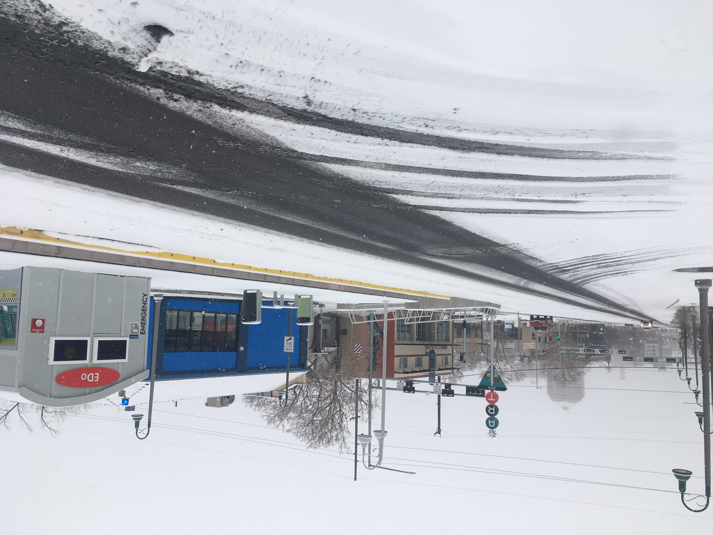
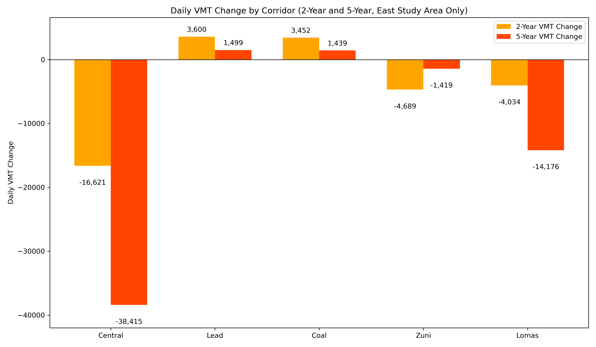
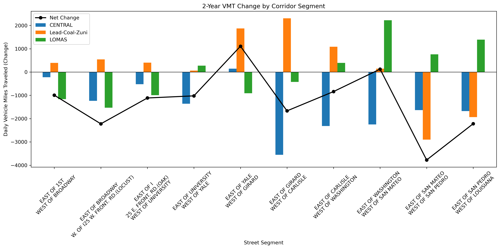
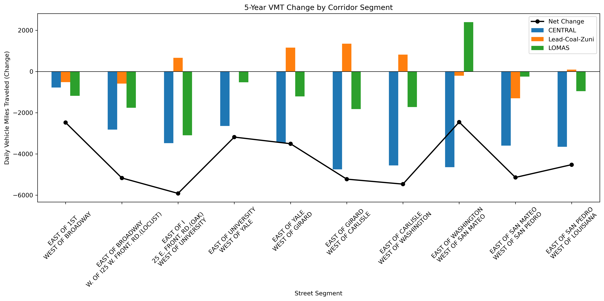

How Did Albuquerque Rapid Transit (ART) Impact Traffic On Parallel Roads?

Albuquerque Rapid Transit station in East Downtown
Introduction
During my 7 years as a transportation planner in Albuquerque, nothing pissed people off quite so much as the construction of the Albuquerque Rapid Transit (ART) project. People were incensed at the idea of removing a lane for general traffic in each direction and removing unprotected left turns. Many predicted a traffic disaster for Central Avenue and for parallel routes like Lead, Coal, and Lomas.
Now that the dust has settled, we can examine how driving patterns in the ART corridor have shifted. If traffic on Central Ave. disappeared, did it show up on neighboring roads? That is the question that this analysis looks to answer. I will analyze Mid-Region Council of Government’s Average Annual Daily Traffic (AADT) counts to answer this question.
Is Traffic More Like a Liquid or a Gas?
I remember sitting in a meeting at Mid-Region Council of Governments (MRCOG), my old workplace, where a city engineer was talking about the ART project before construction began. He confidently predicted that traffic would be displaced from Central onto parallel roads. He likened it to pushing a boulder into a stream. The water would be displaced and flow around the obstacle – that is just physics, a law of nature. All the smart people in the room nodded along, accepting his commonsense prediction.
People think of car trips as an unalterable force of nature like the tide. More and more data show us that traffic is more like a gas – it grows or shrinks to fit whatever space is given to it 1. Even some DOTs admit that building new capacity does not satiate demand to drive at the peak hour 2. When the Texas DOT expanded the Katy Freeway, at huge taxpayer expense, peak hour travel times did not improve. In fact, they got worse within a few years of the expansion 3.
The phenomenon of traffic increasing after new roadway capacity is built is referred to as “induced demand.” It seems that roadways are subject to the law of supply and demand 4. If more road space is built and driving becomes easier, people will make more trips. On the flipside, if driving becomes more difficult, people may make fewer trips, shift their travel to less busy times, or choose a different mode, particularly if the project improves conditions for transit and walking.
It has taken transportation professionals years to truly understand induced demand. DOTs across the country have been reacting to traffic for decades, playing an unwinnable game of whack-a-mole, trying to meet demand to drive. People started asking why cities like Atlanta, which has one of the highest freeway miles per capita in the US, still suffers from terrible congestion 5. Or why the city of Cleveland lost population between 1993 and 2017, added a lot of new freeway miles in that period and yet traffic congestion worsened 6. This makes no sense if you are operating from the belief that traffic is like the tide – predictable and unalterable - and can be satiated with enough roadway space. The truth is that people will drive more if you make it easier for them to drive. Developers will also sprawl further into the countryside if it is connected to the city with good roadway infrastructure.
Some argue that more driving leads to more economic growth, but data from cities across the U.S. tells a different story. New York City, with some of the lowest VMT per capita in the country, is also its largest economic engine 7, 8. Seattle added over 100,000 jobs downtown while reducing the number of cars entering the city 9. These cases show that prosperity comes not from more vehicle miles, but from better access to opportunity, which can be achieved through smarter planning, land use reform, and multimodal infrastructure.
I decided to have a look at the numbers not only on Central, but on the adjacent corridors (Lead, Coal, Lomas) and compare those numbers to the entire Bernalillo County roadway network excluding those corridors. MRCOG collects data on all the Albuquerque region’s major roads. Do you ever drive over those black tubes spanning the roadway? It is a pneumatic tube counting how many cars drive over it.
Understanding Average Annual Daily Traffic (AADT)
First a note about the data we are using. Average Annual Daily Traffic (AADT) is a common metric used to understand how many vehicles use a particular roadway, on average, over the course of a year. It is a processed and adjusted figure that represents estimated daily usage throughout the year.
MRCOG collected these traffic counts using pneumatic tubes laid across roadways for 48 hours. These short-term counts were taken once every three years on most major roads. After collecting the raw data, MRCOG applied:
- Seasonal adjustment factors: based on continuous data collected at permanent count stations, to account for the time of year the count was taken
- Growth factors: used in the years between counts to estimate changes in volume, usually based on trends observed in nearby or similar roads
The result is an estimate of how many vehicles use that roadway on an average day over the entire year — weekdays and weekends included. This is what’s shown in the analysis below: annualized, comparable data that lets us see long-term patterns. You can access this data on an online interactive map here.
What is Vehicle Miles Traveled (VMT) and Why It Matters
While Average Annual Daily Traffic (AADT) tells us how many vehicles pass a given point on a roadway, it doesn’t capture the full picture of travel behavior. To understand the overall scale of vehicle activity across a corridor or region, a more comprehensive metric is needed: Vehicle Miles Traveled (VMT).
VMT measures the total number of miles driven by all vehicles on a roadway segment each day. It is calculated by multiplying the AADT by the length of the road segment (in miles). For example, if a segment carries 10,000 vehicles per day and is 0.5 miles long, it generates 5,000 VMT (10,000 × 0.5 = 5,000 VMT).
This metric is especially valuable in corridor studies because it accounts for both:
- Traffic volume (how many vehicles), and
- Distance traveled (how far they go).
By summing VMT across all segments within a corridor, we can evaluate the cumulative change in traffic activity — giving us insight into whether overall travel has increased, decreased, or shifted to nearby streets. It also helps identify whether traffic reductions in one corridor are offset by increases elsewhere, or if total vehicle travel has truly declined.
Because VMT reflects total roadway use, it is the primary metric used in this analysis to evaluate the impact of ART on travel patterns in the study area.
Study Area
This analysis focuses on the eastern segments of the ART corridor (Central, Lead, Coal, Lomas, and Zuni), where intuitive and proximate alternatives to Central exist. These corridors form a coherent street grid within a dense urban fabric, making them appropriate for assessing potential traffic displacement or redistribution following the implementation of ART.
Western segments of Central were excluded because the most direct north-south alternatives, such as I-40, function primarily as regional throughways. These facilities serve a wide variety of trip purposes and origins, including non-local and freight trips, making it difficult to isolate ART-related effects. As a result, limiting the analysis to the eastern study area enhances the interpretability and specificity of the findings.

Methodology
To evaluate the impact of Albuquerque Rapid Transit (ART) on traffic volumes along Central Avenue and surrounding corridors, I analyzed annual average daily traffic (AADT) data from the Mid-Region Council of Governments (MRCOG).
Because construction of ART occurred primarily during 2017, that year was excluded from the analysis to avoid distortion. I created both 2-year and 5-year averages for comparison before and after implementation:
- 2-Year Averages
- Pre-ART: 2015 and 2016
- Post-ART: 2018 and 2019
- 5-Year Averages
- Pre-ART: 2012–2016
- Post-ART: 2018–2022
To provide a more complete picture of travel behavior, AADT values were multiplied by segment length to estimate Vehicle Miles Traveled (VMT). This metric allows for direct comparison of the total volume of travel on each corridor and captures both how many vehicles are using a segment and how far they travel.
For each roadway segment, I calculated the average VMT for the pre- and post-ART periods and compared them to assess change.
While the 5-year timeframes offer a broader view, they are complicated by the COVID-19 pandemic, which caused a significant drop in travel region-wide beginning in 2020. According to MRCOG, vehicle miles traveled (VMT) in the region dropped an estimated 23% in 2020, and recovery has been uneven. Therefore, the 2-year comparisons (2015–16 vs. 2018–19) are emphasized throughout this report as they provide the cleanest comparison free of pandemic-related anomalies.
Findings
As many predicted, VMT along Central in the ART East Study Area fell markedly, but the cumulative VMT did not spike on the parallel routes in the study area — in fact, those routes fell slightly also. There were certain sections of the parallel routes that went up, and a strong argument can be made that they went up due to ART-displaced traffic. But still, a large portion of the study area’s daily VMT simply disappeared — 18,291 VMT seems to have simply disappeared in the 2 years following the ART traffic change implementations.
The table below shows 2-year and 5-year percent change in VMT and overall change in VMT across three categories: Central Ave through the study area, ART adjacent corridors (Lead/Coal/Zuni/Lomas), and the rest of the Bernalillo County Road network outside the ART East Study Area. A row was added to show the net change in VMT in the ART East Study Area.
| Corridor | Percent Change (2-Year) | VMT Change (2-Year) | Percent Change (5-Year) | VMT Change (5-Year) |
|---|---|---|---|---|
| Central | -13% | -16,665 | -31% | -38,419 |
| ART Adjacent | -1% | -1,626 | -6% | -12,679 |
| Net Study Area | – | -18,291 | – | -51,098 |
| Rest of BernCo | 6% | 738,188 | 2% | 232,755 |
Table 1: Rest of BernCo includes the entire countywide roadway network excluding the study area. Source: MRCOG
The table above also includes the 5-year pre- and post-ART changes, which show an even steeper decline for both the ART corridor and adjacent routes. However, it’s important to consider that travel patterns in the five years after ART were significantly affected by the COVID-19 pandemic. In contrast, the rest of the roadway network in Bernalillo County actually saw a nearly 5% increase in traffic in 2018–2019 compared to 2015–2016.
To get a clearer picture of how traffic changed, we look next at VMT by corridor and then VMT by segment, which reveal both the scale and spatial distribution of those changes.
VMT Change by Corridor
When we break down the change by corridor, we can see that some did indeed go up. Lead and Coal Avenues both had slight increases in total VMT. Some segments experienced more growth than others, but we will look at that more in the next section with the grouped segment analysis. However, the increases on Lead and Coal were far smaller than the decrease along Central.

Table 2: Traffic Data Source: MRCOG
The change in Vehicle Miles Traveled (VMT) along Central is striking. During the post-ART period (2018–2019), Central saw an average daily reduction of 16,665 vehicle miles traveled compared to the pre-ART period (2015–2016). In that period, there were increases in traffic along Lead and Coal Avenues, 3,600 and 3,452 VMT respectively, but their VMT gain was nowhere near Central Avenue’s loss. Interestingly, Lomas also saw a decline of 4,034 VMT in the same period. Zuni also saw a reduction in VMT in that period, but we must remember that Zuni was given a road diet, losing a lane in each direction, in 2016.
The changes are even more extreme if you look at the 5 years before ART and 5 years afterward. The increased VMT along Lead and Coal is less and the decreases along Central and Lomas are much larger. As stated previously, we must remember that COVID-19 travel patterns heavily impacted the 5-year before and after statistics, and for that reason, this study emphasizes the 2-year comparison.
The cumulative changes are striking. When the VMT changes by corridor are summed together, the ART study area lost 18,291 VMT in the 2-year post-ART period. In the 5-year post-ART period, there were 51,098 fewer cumulative VMT in the study area. Clearly, traffic has not shifted to nearby corridors. It appears that much of Central Avenue’s pre-ART traffic has simply disappeared.
Net Traffic Change By Grouped Segment
East of downtown, the parallel corridors generally share breakpoints at the same major cross streets, which makes them well-suited for comparison. In this part of the analysis, we examine the segment-by-segment change in VMT before and after ART implementation across all corridors in the study area.

Table 3: Traffic Data Source: MRCOG
If you follow the black line that represents “Net-Change” in the chart above, you can see that on all but two segments of the ART study area the cumulative traffic decreased. Through the University area/Nob Hill, Lead and Coal did pick up some traffic – with net traffic even increasing on Central between Yale and Girard. On the link where traffic increased the most on Lead and Coal Avenues, between Girard and Carlisle, the increase in traffic on Lead/Coal was still below the decrease on Central Avenue, which means cumulative traffic still went down on that segment.
Let’s look at the 5-year change in AADTs on the same grouped segments. The net traffic went down significantly throughout the corridor. It is important to remember that COVID 19 brought down traffic throughout the region in 2020, 2021, and 2022. By 2022, much of the westside corridors had recovered, however many of the roads leading to major employment centers like downtown ABQ remained lower than pre-pandemic years . Traffic in the 5 years after ART was implemented was higher between Yale and Washington on Lead/Coal, however, the increase on these streets was way below the drop along Central and Lomas, which equates to a large drop in net traffic along those sections.

Table 4: Traffic Data Source: MRCOG
On a 2-year basis, traffic dropped on all but 2 sections of the ART corridor east of downtown. On a 5-years basis, traffic dropped substantially on all sections of the ART corridor east of downtown.
The map below illustrates the change spatially. Through the University and Nob Hill areas, Lead and Coal Avenues did indeed pick up traffic, but again, not as much as Central lost. The eastern sections of Lomas did pick up some traffic, this may be because both Central and Zuni lost roadway capacity between San Mateo and Louisiana, making Lomas much more attractive.
Interactive Map
Figure: Interactive VMT Map by Corridor
Economic Context
It’s unclear what long-term economic impact ART has had on Central Avenue. But one thing is clear: the worst-case predictions, of a corridor-wide collapse, have not come to pass.
Traffic volumes on Central have been falling for decades, long before ART was conceived. The corridor lost its function as a regional thoroughfare when I-40 was constructed, siphoning off the through-traffic economy that once sustained motels and drive-in diners. Many of these businesses had already declined by the 1990s.
While ART is controversial, it is one of the first serious efforts to redefine Central Avenue’s role, shifting it from a conduit for through traffic who nowadays prefer I-40, to a space for people. Central is a major destination for the people of Albuquerque, and it hosts many events like the Twinkle Light Parade and Summerfest. The long-term economic consequences of this shift deserve further study.
Conclusion
The fears that ART would unleash a traffic tsunami onto parallel corridors never materialized. While a few segments along Lead and Coal picked up some volume, they did not come close to matching the losses on Central — or even on nearby corridors like Lomas. In fact, most road segments in the ART corridor saw a decline in traffic, and when taken together, the net traffic in the study area fell.
This supports a growing body of evidence around “disappearing traffic” — the idea that when road capacity is reduced, some car trips simply go away. We’ve seen this elsewhere: when San Francisco tore down the Embarcadero Freeway, predictions of chaos gave way to quieter streets and smoother travel 10. When Seattle tore down its Alaskan Way Viaduct, which carried 90,000 vehicles a day, fears of a traffic disaster never materialized 11. Central Avenue appears to be telling a similar story.
Traffic is not a force of nature like the tide. It’s the result of individual human choices, shaped by the infrastructure we build. ART did not just change the layout of Central; it challenged a long-held assumption: that driving is king, and road space for cars must always be preserved and expanded.
Footnotes
- T4America. (2020). The Congestion Con. ↩
- Jaffe, Eric. “California’s DOT Admits That More Roads Mean More Traffic.” Bloomberg. ↩
- Cortright, J. "Reducing congestion: Katy didn’t." City Observatory. ↩
- Duranton, G., & Turner, M. A. (2011). The Fundamental Law of Road Congestion: Evidence from US cities. ↩
- Federal Highway Administration (FHWA). Highway Statistics 2017: Table HM-72 – Highway Statistics Series. ↩
- T4America. (2020). The Congestion Con. ↩
- Replica. (2023). Vehicle Miles Traveled by Metro Area. ↩
- U.S. Bureau of Economic Analysis. (2023). GDP by Metropolitan Area. ↩
- Commute Seattle. (2019). Center City Mode Split Survey. ↩
- Wes Guckert, “Roads and the Case for Reduced Demand,” Governing, March 28, 2025. Link ↩
- David Gutman, “The Cars Just Disappeared: What Happened to the 90,000 Cars a Day the Viaduct Carried Before It Closed?” The Seattle Times, January 25, 2019. Link ↩
Bibliography
- Commute Seattle. 2019 Center City Mode Split Survey. Link
- Cortright, Joe. “Reducing Congestion: Katy Didn’t.” City Observatory, March 28, 2016. Link
- Duranton, Gilles, and Matthew A. Turner. “The Fundamental Law of Road Congestion: Evidence from US Cities.” American Economic Review 101, no. 6 (2011): 2616–2652. Link
- Federal Highway Administration. Highway Statistics 2017: Table HM-72 – Highway Statistics Series. U.S. Department of Transportation. Link
- Guckert, Wes. “Roads and the Case for Reduced Demand.” Governing, March 28, 2025. Link
- Gutman, David. “The Cars Just Disappeared: What Happened to the 90,000 Cars a Day the Viaduct Carried Before It Closed?” The Seattle Times, January 25, 2019. Link
- Jaffe, Eric. “California’s DOT Admits That More Roads Mean More Traffic.” Bloomberg, November 12, 2015. Link
- Mid-Region Council of Governments. “COVID-19 and Travel.” Accessed June 3, 2025. Link
- Replica. Vehicle Miles Traveled Rankings by Metro Area, 2023. Link
- Transportation for America. The Congestion Con: How More Lanes and More Money Equals More Traffic, 2020. Link
- U.S. Bureau of Economic Analysis. GDP by Metropolitan Area, 2023. Link